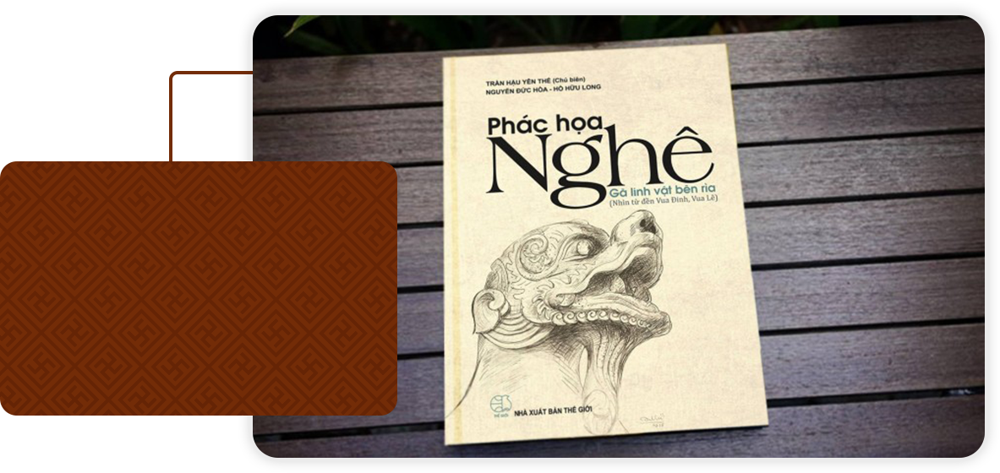

"Trong quá trình nghiên cứu, đo đạc, vẽ ở đây, tôi ngấm và say mê hình tượng con nghê. Con nghê đá đền Vua Đinh rất đặc biệt, nó biểu đạt nhiều sắc thái phong phú, đa dạng; vừa gần gũi tình cảm vừa thiêng liêng, oai mãnh”.
Trần hậu yên thế

Giảng viên, họa sĩ, tiến sĩ Trần Hậu Yên Thế sinh năm 1970, công tác tại Trường Đại học Mỹ thuật Việt Nam. Ông là tác giả của những cuốn sách nghiên cứu mỹ thuật, di sản văn hóa, như: "Dịch đồ-cách tiếp cận từ thị giác", "Đồ án trang trí mỹ thuật ở đền Vua Đinh-Lê", "Song xưa phố cũ"... Ông được giải thưởng Bùi Xuân Phái-Vì tình yêu Hà Nội năm 2014 cho cuốn "Song xưa phố cũ". Xem cuốn sách này, người ta phần nào hiểu được tính cách Ông Quê gốc ở Hà Tĩnh, sinh ra và lớn lên tại Hà Nội, Ông như người chịu ơn đất này.
Ông trả cái ơn đó bằng một tình yêu tha thiết. Và Ông không thể chịu nổi, không thể chấp nhận bất cứ thứ gì làm xấu đi thành phố Ông yêu quý. Ông rong ruổi khắp các con phố, ngõ nhỏ của Hà Nội để chụp ảnh, ghi chép, phác họa hình ảnh Hà Nội. Tháng 12-2013, cuốn sách "Song xưa phố cũ" ra mắt độc giả và gây tiếng vang lớn.
Bên cạnh lĩnh vực mỹ thuật đương đại, nhà nghiên cứu Trần Hậu Yên Thế còn thể hiện một tình yêu lớn dành cho mỹ thuật cổ của dân tộc. Ông đã có nhiều nghiên cứu lý luận mỹ thuật về điêu khắc dân gian, nhất là các biểu tượng quen thuộc nơi đình, chùa, đền, như: Con rồng, con nghê… Đầu năm 2018, cuốn sách "Phác họa Nghê-gã linh vật bên rìa" của nhóm tác giả Trần Hậu Yên Thế (chủ biên), Nguyễn Đức Hòa, Hồ Hữu Long ra mắt và nhận được sự chào đón nồng nhiệt của độc giả. Cuốn sách đầy ắp tư liệu, hình ảnh và phần chú giải ngắn gọn về hình tượng con nghê-một linh vật thuần Việt.
Tâm sự về cuốn sách mới xuất bản này, anh nói: “Khoảng 10 năm trước, tôi cùng nhóm Enter Việt Nam tập trung khảo sát, nghiên cứu đồ án hoa văn trang trí tại đền Vua Đinh, Vua Lê. Các con linh vật ở đền Vua Đinh, Vua Lê rất phong phú. Nhiều con vật có tính huyền thoại, như: Rồng, phượng, kỳ lân...; nhiều con vật thật, như: Voi, ngựa, chim… Trong quá trình nghiên cứu, đo đạc, vẽ ở đây, tôi ngấm và say mê hình tượng con nghê. Con nghê đá đền Vua Đinh rất đặc biệt, nó biểu đạt nhiều sắc thái phong phú, đa dạng; vừa gần gũi tình cảm vừa thiêng liêng, oai mãnh”.
Nghiên cứu của nhóm Trần Hậu Yên Thế có thể nói là kỹ nhất từ trước tới nay đối với một đối tượng là một linh vật của mỹ thuật cổ Việt Nam. Số lượng lên đến hàng nghìn bức phác thảo được so sánh, đối chiếu với nhiều vùng văn hóa khác, như: Nhật Bản, Hàn Quốc, Trung Quốc... Đây là tài liệu quý cho việc khẳng định giá trị của linh vật thuần Việt nhằm đẩy lùi làn sóng “xâm thực” của những linh vật ngoại vào văn hóa Việt. Mười năm đã trôi qua kể từ ngày những trang viết đầu tiên của cuốn sách “Phác thảo Nghê-Gã linh vật bên rìa” được chắp bút, những khó khăn đã lùi, nhận thức của người dân về linh vật dần đúng đắn.
Phác họa nghê
"Gã linh vật bên rìa"

Cuốn sách Phác họa Nghê - gã linh vật bên rìa (Nhìn từ đền Vua Đinh, Vua Lê) là những trang phác thảo ban đầu chân dung một con vật linh quan trọng bậc nhất của người Việt: con Nghê. Cuốn sách bắt đầu từ những con nghê ở đền Vua Đinh, Vua Lê ở cố đô Hoa Lư, sau đó mở rộng tầm nhìn đến các vùng miền khác. Nghê có mặt ở đền miếu, lăng tẩm, đình chùa, từ thường dân cho đến cả chốn hoàng cung.
Cuốn sách chỉ có đôi lời bàn luận, dẫn giải còn phần lớn là cung cấp những tư liệu hình ảnh, những bản đạc họa, sơ đồ. Sách dày 332 trang với 554 hình và ảnh tư liệu, trình bày đẹp mắt, các biện luận chú giải ngắn gọn, dễ hiểu. Sách đã công phu sưu tầm hình tượng nghê từ thời Lý đến thời Nguyễn, kể từ Bắc chí Nam; ngoài ra còn bước đầu so sánh với một số linh vật của các nước trong khu vực.Đây là công trình nghiên cứu của TS. Trần Hậu Yên Thế và các cộng sự được bắt đầu từ 10 năm trước. 3 năm trở lại đây, kể từ khi Bộ Văn hóa, Thể thao và Du lịch ban hành Công văn số 2662 về việc không sử dụng biểu tượng, sản phẩm, linh vật không phù hợp với thuần phong mỹ tục Việt Nam thì nhóm tác giả càng thôi thúc sớm xuất bản sách này, bởi trong xã hội hiện nay kể cả cán bộ quản lý văn hóa ở các địa phương còn nhiều người chưa nhận dạng được các linh vật nghê, lân, sư tử … và nguồn gốc của nó, dẫn đến tình trạng sử dụng tràn lan.
Phác họa nghê
"Gã linh vật bên rìa"
Cuốn sách không chỉ giới thiệu đến độc giả hình ảnh “con nghê” Việt mà còn là thông điệp mà nhóm tác giả trong việc chung bảo vệ, gìn giữ và phát triển linh vật thuần Việt. Theo họa sĩ Trần Hậu Yên Thế: “Nghê đích thực là gã linh vật chầu rìa độc đáo nhất trong nghệ thuật cổ truyền của người Việt. Dù chỉ là phác họa ban đầu, khuôn mặt nghê hiện ra lúc thì trầm lắng, trang nghiêm, lúc thì nghênh nghênh, hớ hênh phóng túng, miệng ngoác ra cười đến tận mang tai”.Nghê đã bị bỏ quên khỏi những cuốn sách về nghệ thuật cổ truyền của người Việt, thậm chí bị nhầm tên quên họ trong một số công trình nghiên cứu của các học giả nước ngoài.
Song, dù thế nào chăng nữa, cũng như những vai hề chèo, diễn viên phụ xuất sắc, nghê đã chạm đến chốn sâu lắng nhất của tâm hồn người Việt.Cuốn sách không chỉ giới thiệu đến độc giả hình ảnh “con nghê” Việt mà còn là thông điệp mà nhóm tác giả trong việc chung bảo vệ, gìn giữ và phát triển linh vật thuần Việt. Theo họa sĩ Trần Hậu Yên Thế: “Nghê đích thực là gã linh vật chầu rìa độc đáo nhất trong nghệ thuật cổ truyền của người Việt. Dù chỉ là phác họa ban đầu, khuôn mặt nghê hiện ra lúc thì trầm lắng, trang nghiêm, lúc thì nghênh nghênh, hớ hênh phóng túng, miệng ngoác ra cười đến tận mang tai”.Nghê đã bị bỏ quên khỏi những cuốn sách về nghệ thuật cổ truyền của người Việt, thậm chí bị nhầm tên quên họ trong một số công trình nghiên cứu của các học giả nước ngoài. Song, dù thế nào chăng nữa, cũng như những vai hề chèo, diễn viên phụ xuất sắc, nghê đã chạm đến chốn sâu lắng nhất của tâm hồn người Việt.